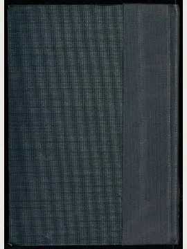

حسن التوسل الى صناعة الترسل

قراءة محددة النطاق لصفحة واحدة من النسخة الممسوحة، وليست تلخيصا كاملا للكتاب. نصف ما ظهر لنا في هذه الصفحة فقط، ولا ننقل نصها.
روايات الحديث وقراءة اللغة لتوسيع الإنشاء
تتناول الصفحة روايات الحديث باللفظ والمعنى، وتذكر ابن عون وابن سيرين والقاسم ورجاء بن حيوة. ثم تنصح الكاتب بقراءة النحو واللغة، مثل «الفصيح» و«كفاية المتحفظ»، ليتسع لسانه في وصف الخيل والسلاح والحرب. فالكتاب دليل لمن يريد أن يتقن الترسل، وهذه الصفحة تبين من أين يستمد الكاتب مادته. نصف الصفحة المقروءة وحدها. وللصفحة فائدة لمن يتتبع تعليم الكتابة في العصر المملوكي، إذ تظهر ما كان يطلب من الكاتب من علم ومحفوظ ومران على الألفاظ. ولا نذكر غير ما في الصفحة.
زاوية وحدود القراءة
قراءة صفحة واحدة من الطبعة الممسوحة، لا الكتاب كاملًا.
الطبعة والحقوق
تصنف جامعة نيويورك مجموعتها الرقمية للكتب العربية بأنها محتوى عربي في الملك العام، ولا يذكر سجل هذا الكتاب بيان حقوق خاصا به. سنة الطبعة بحسب السجل: ١٨٩٨م. مصدر النسخة الممسوحة: مكتبات جامعة كولومبيا. حياة المؤلف بحسب السجل: ١٢٤٦-١٣٢٥م. هذا كل ما نستند إليه في الحقوق، ولا ندعي أكثر منه.
تنزيل PDF المجاني ↓ صفحة الكتاب في المجموعة ↗